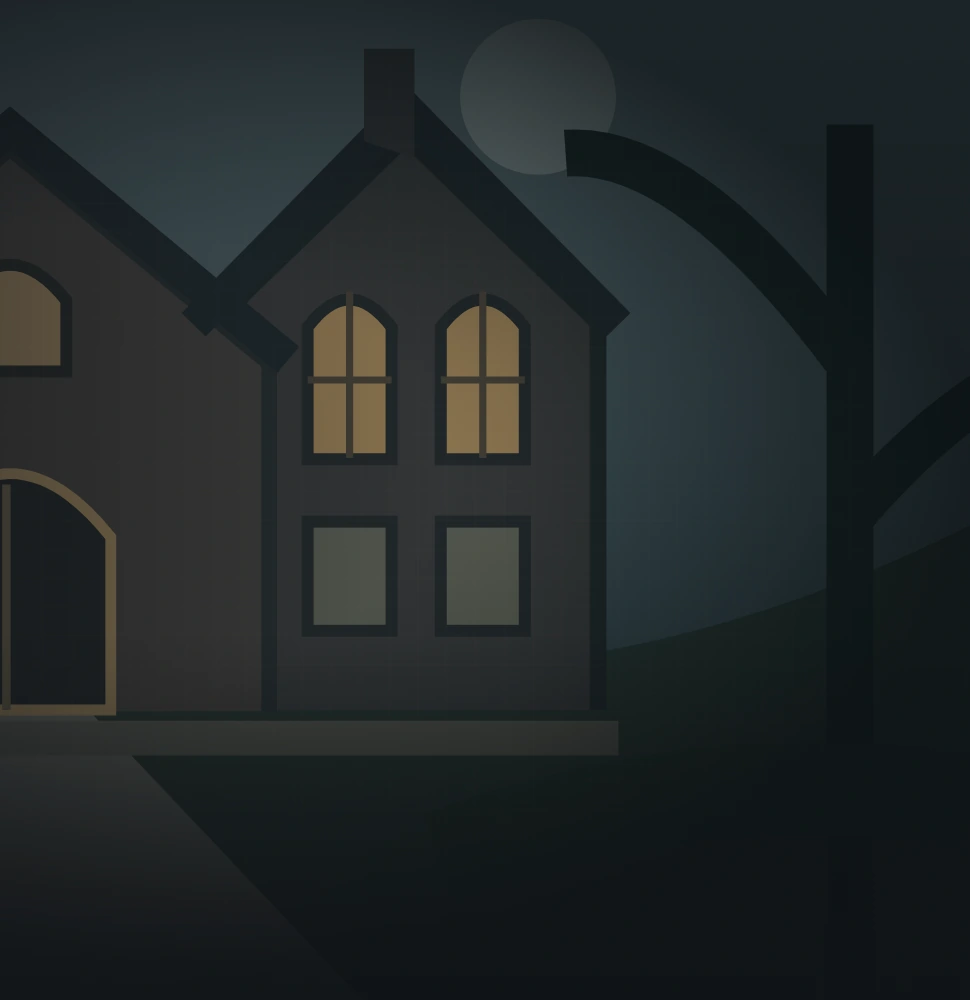
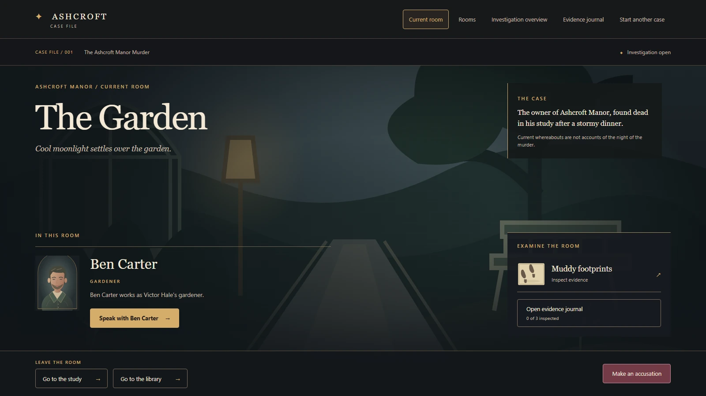
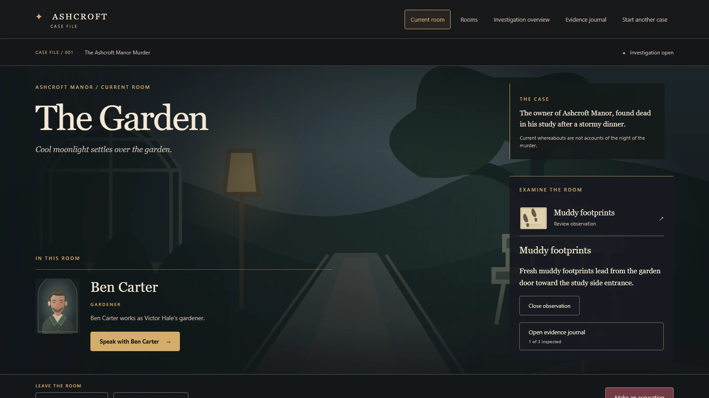
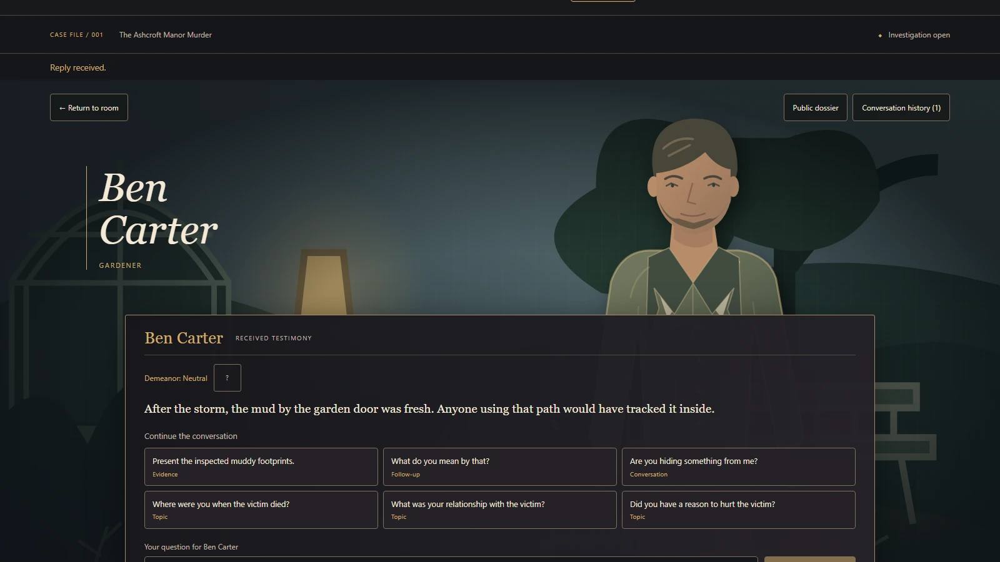
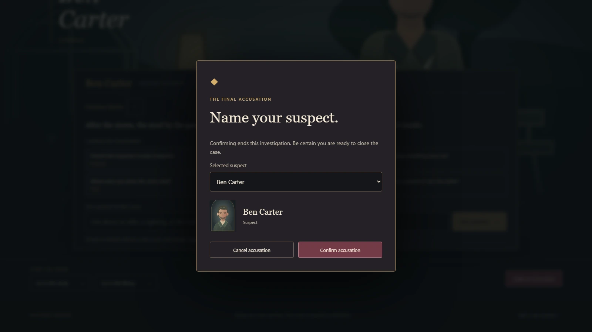
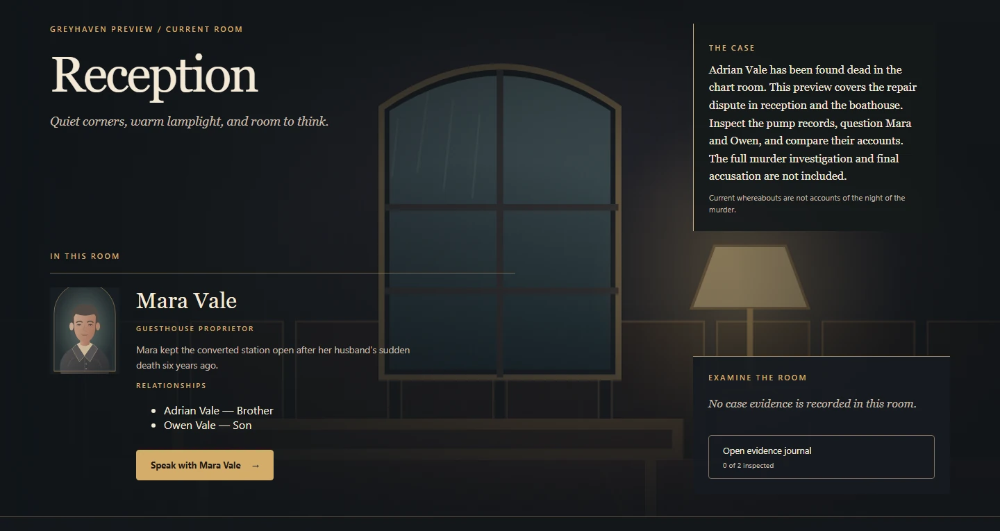

Before inspection
Claim alone
The game records zero inspected clues. Ben’s footprint question stays unavailable.

Detective Game with AI Agents
For mystery players who want to test a witness’s story against the evidence.
Ashcroft Manor / One complete mystery · Three suspects

01 / 04 Explore
Find the muddy footprints beside the garden door.

02 / 04 Discover
“Fresh muddy footprints lead from the garden door toward the study side entrance.”

03 / 04 Question
“What about the muddy footprints?”
Ben repliesAnyone using that path would have tracked it inside.

04 / 04 Deduce
Weigh the accounts. Choose a suspect. Leave the verdict open.
“I inspected the muddy footprints. What do you know?”
Before inspection
The game records zero inspected clues. Ben’s footprint question stays unavailable.
After inspection
The garden inspection unlocks the option to present the footprints to Ben.
The engine decides which testimony is allowed. Optional AI can choose its delivery.
Verified in the inspection-gate test and knowledge-leak review.
Earlier contract
The format allowed any text. The game could accept only two exact lines.
Repaired contract
The AI interface checks the choice. The game checks it again before anyone speaks.
Three requests, three accepted decisions
Game Master · Owen · Mara
The earlier trace confirmed Mara’s rejection. Its precise cause is unknown.
Working preview

One Game Master sets an approach. Owen and Mara each choose how to respond.
Approved case design
Seven witnesses, five locations and two ways to build a case.
Room connections and interview review are built and awaiting review.
Next milestone / Build the full investigation and test whether players can solve it by either route.
Visit the project page for the demo and local setup.
View the repository on GitHub